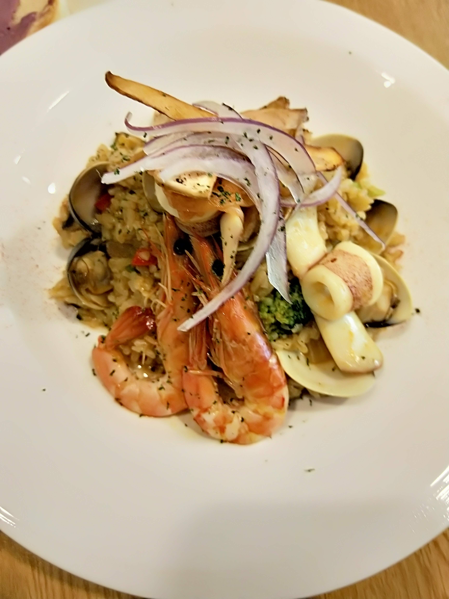

主餐燉飯 泰式咖哩海鮮燉飯
我們家每一次去BOLA's cooking 寶拉料理廚房我們家都會點他的燉飯類像是我自己就很喜歡吃他們店的泰式咖哩海鮮燉飯，
他們店家的泰式咖哩醬吃起來跟外面就是不一樣，因為是老闆自己調製的泰式咖哩醬料
泰式咖哩海鮮燉飯裡的食材內含橄欖油、蔬菜、鮮魚、蝦、蛤蠣、澎湖脆捲、自製泰式咖哩sauce
首頁
前菜:每日新鮮蔬菜濃湯:洋蔥湯、天然抹醬、純手揉手撕麵包
飯後:手作低卡蛋糕、甜點
課後心得感想